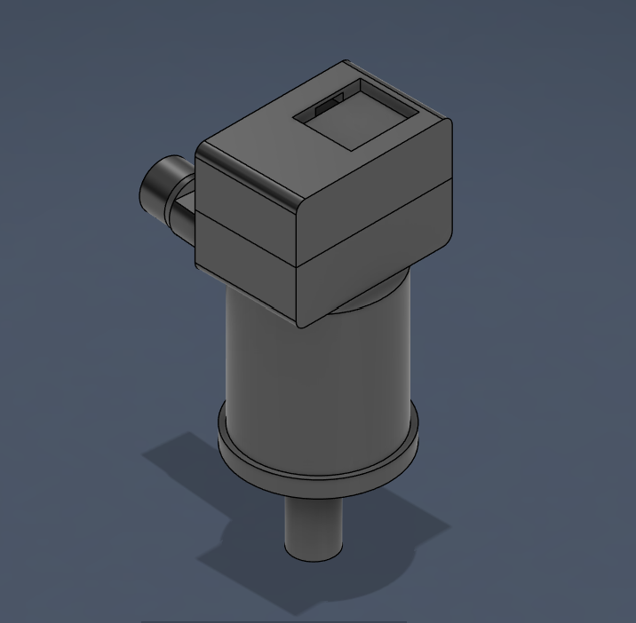
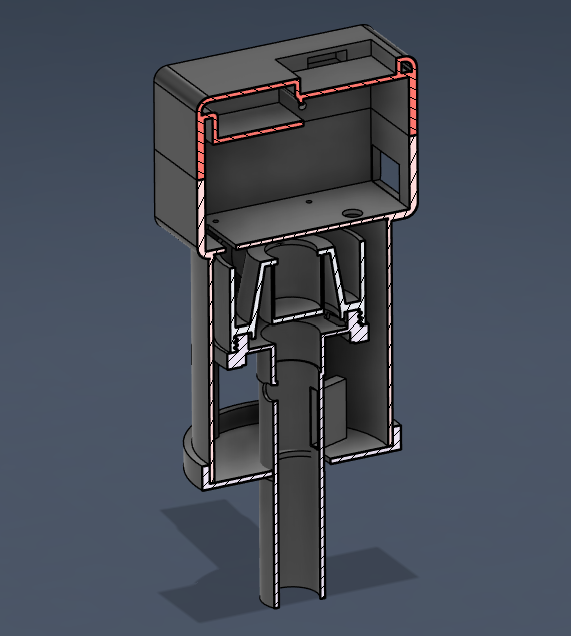

Capstone / Medical Device
Pulmonary Unit for Live Sensing & Evaluation (P.U.L.S.E.)
Designed an attachment for a bag valve mask that integrates sensing and embedded processing to monitor respiratory parameters. I also created a companion application to visualize live sensor data, present key ventilation metrics, and make the system easier to monitor through a clear user-facing interface. Together, the hardware and application improve visibility into ventilation performance through continuous feedback, embedded data acquisition, and accessible display interfaces.
Embedded Firmware
Pressure Sensing
BLE / Wireless
UI/UX Dashboard

